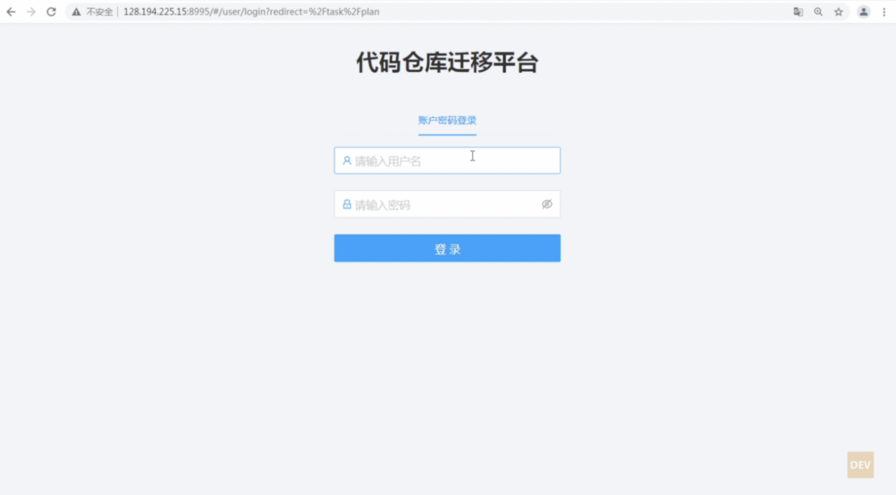

在迁移工作启动之前，项目组应首先填写迁移计划，将项目组所有要迁移的仓库信息和迁移计划录入到“代码仓库迁移平台“上来。并且，每次完成迁移、切换时，需在该系统中即时更新迁移状态，方便工作组对整体迁移工作的统筹管理。各项目组一定要积极配合并及时更新。谢谢！
云桌面内登陆 http://128.194.225.15:8995 , 用户名密码:http://128.36.164.8:8090/pages/viewpage.action?pageId=74678482 登录成功后即可以看到“迁移计划”和“迁移任务”两个菜单。迁移计划是迁移计划填报的菜单。下图是登录后列出的迁移计划，在该页面中可以对迁移计划进行新增、修改、删除和状态变更、执行迁移动作（针对CC仓库）的操作。
